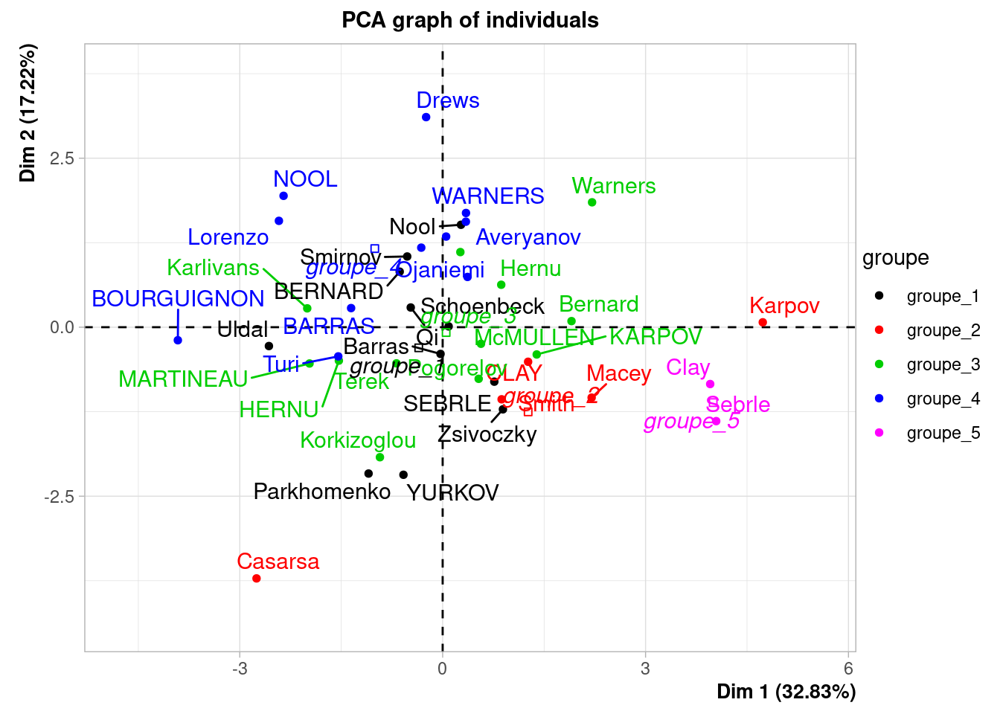
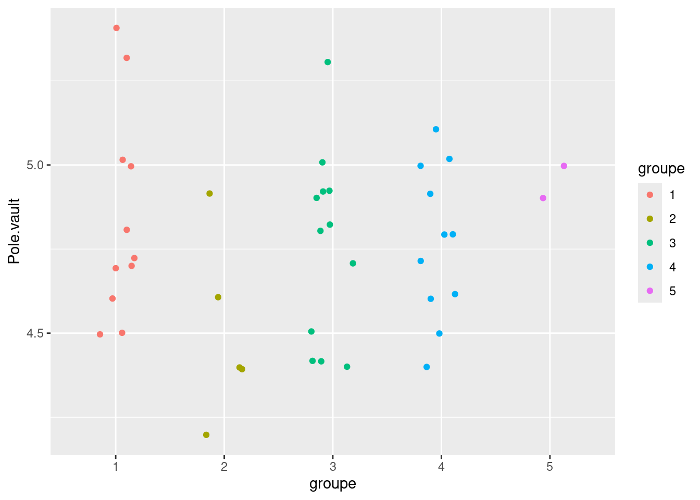

library(FactoMineR)
library(tidyverse)
library(pheatmap)
library(corrplot)
library(GGally)
library(viridis)
library(ggrugby)
library(ggvoronoi)Atelier Statistique & Sport
Durant cette session, nous allons mettre en oeuvre l’analyse en composantes principales, la classification ascendante hiérarchique et la validation des groupes de classification sur 3 jeux de données. Une illustration de la mise en oeuvre du maillage de Voronoï est proposée en fin de session.
Chargement des packages
Présentation des jeux de données
decathlon
Les données decathlon sont disponibles dans le package FactoMineR. Elles contiennent les performances de décathloniens lors de 2 compétitions.
data("decathlon")
help("decathlon")Nous nous focalisons sur les résultats des 10 épreuves en supprimant les 3 dernières colonnes du jeu de données pour travailler avec l’objet decathlon_10events.
decathlon_10events <- decathlon %>% select(-Rank, -Points, -Competition)records_athle
Les données records_athle contiennent les records nationaux (en date du 19 août 2025, d’après différentes sources) de 30 pays pour 9 épreuves d’athlétisme (course seulement) du 100m au marathon.
records_athle <- read.table("athle_records_2025.csv",
header = TRUE, row.names = 1,
sep = ";", dec = ",")
dim(records_athle)[1] 30 9head(records_athle) X100m X200m X400m X800m X1500m X5000m X10000m SemiMarathon Marathon
Australie 9.93 20.02 44.38 103.79 209.41 775.76 1629.57 3597 7582
Belgique 10.02 20.13 44.15 102.43 210.99 769.71 1612.30 3591 7416
Bresil 9.96 19.89 44.29 101.77 213.25 766.59 1648.12 3573 7491
RoyaumeUni 9.83 19.73 43.44 101.73 207.79 780.41 1606.46 3547 7511
Canada 9.84 19.62 44.44 101.20 211.71 767.20 1594.14 3600 7536
Chine 9.83 19.88 45.14 106.32 216.49 805.14 1688.00 3753 7695GPS_rugby
Les données GPS_rugby contiennent la position (x,y), acquise à la fréquence de 10Hz, des 15 joueurs d’une équipe de rugby pendant 8.9 secondes d’un match. On dispose ainsi de 89 positions pour chaque joueur. Elles sont structurées selon un format long dans un data.frame à 1335 lignes et 4 colonnes.
GPS_rugby <- read.table("data_GPS_rugby.csv", sep=",", header = TRUE)
dim(GPS_rugby)[1] 1335 4head(GPS_rugby) frame_id player x y
1 4102 1 67.06116 14.048823
2 4102 8 77.28953 8.746621
3 4102 11 43.51405 1.929076
4 4102 4 77.31917 9.108978
5 4102 2 76.94569 11.190284
6 4102 13 66.13212 40.570278summary(GPS_rugby) frame_id player x y
Min. :4102 Min. : 1 Min. :37.78 Min. : 1.929
1st Qu.:4124 1st Qu.: 4 1st Qu.:67.44 1st Qu.:16.026
Median :4146 Median : 8 Median :75.60 Median :26.204
Mean :4146 Mean : 8 Mean :71.78 Mean :26.034
3rd Qu.:4168 3rd Qu.:12 3rd Qu.:78.47 3rd Qu.:33.460
Max. :4190 Max. :15 Max. :94.73 Max. :57.300 GPS_rugby$frame_id <- as.factor(GPS_rugby$frame_id)
GPS_rugby$player <- as.factor(GPS_rugby$player)
summary(GPS_rugby) frame_id player x y
4102 : 15 1 : 89 Min. :37.78 Min. : 1.929
4103 : 15 2 : 89 1st Qu.:67.44 1st Qu.:16.026
4104 : 15 3 : 89 Median :75.60 Median :26.204
4105 : 15 4 : 89 Mean :71.78 Mean :26.034
4106 : 15 5 : 89 3rd Qu.:78.47 3rd Qu.:33.460
4107 : 15 6 : 89 Max. :94.73 Max. :57.300
(Other):1245 (Other):801 Pour réaliser certaines analyses, nous aurons besoin de modifier la structure du jeu de données en la rendant wider : plus large dans le sens où, chaque temps de mesure sera disposé sur une colonne différente. Nous disposerons ainsi d’un jeu de données à 15 lignes (1 par joueur) et 90 colonnes (la première contenant le numéro du joueur et les 89 suivantes, sa position en x ou en y).
GPS_rugby_wide <- GPS_rugby %>%
select(frame_id, player, x) %>%
pivot_wider(names_from = frame_id, values_from = x)
dim(GPS_rugby_wide)[1] 15 90Analyses préliminaires
Analyses univariées
Cette partie revient sur certains points déjà évoqués lors de la première session de l’atelier. Elle permet de se familiariser avec les jeux de données avant d’envisager la mise en oeuvre de méthodes multivariées.
decathlon
Premier aperçu des données à travers des indicateurs statistiques par colonne et des boxplots en parallèle (après modification de la structure en format long pour utiliser ggplot2).
summary(decathlon_10events) 100m Long.jump Shot.put High.jump 400m
Min. :10.44 Min. :6.61 Min. :12.68 Min. :1.850 Min. :46.81
1st Qu.:10.85 1st Qu.:7.03 1st Qu.:13.88 1st Qu.:1.920 1st Qu.:48.93
Median :10.98 Median :7.30 Median :14.57 Median :1.950 Median :49.40
Mean :11.00 Mean :7.26 Mean :14.48 Mean :1.977 Mean :49.62
3rd Qu.:11.14 3rd Qu.:7.48 3rd Qu.:14.97 3rd Qu.:2.040 3rd Qu.:50.30
Max. :11.64 Max. :7.96 Max. :16.36 Max. :2.150 Max. :53.20
110m.hurdle Discus Pole.vault Javeline
Min. :13.97 Min. :37.92 Min. :4.200 Min. :50.31
1st Qu.:14.21 1st Qu.:41.90 1st Qu.:4.500 1st Qu.:55.27
Median :14.48 Median :44.41 Median :4.800 Median :58.36
Mean :14.61 Mean :44.33 Mean :4.762 Mean :58.32
3rd Qu.:14.98 3rd Qu.:46.07 3rd Qu.:4.920 3rd Qu.:60.89
Max. :15.67 Max. :51.65 Max. :5.400 Max. :70.52
1500m
Min. :262.1
1st Qu.:271.0
Median :278.1
Mean :279.0
3rd Qu.:285.1
Max. :317.0 decathlon_10events %>%
pivot_longer(cols = everything(), names_to = "Event", values_to = "Perf") %>%
ggplot(aes(x = Event, y = Perf)) + geom_boxplot()Logiquement, le graphique n’est pas très informatif ; les mesures étant dans des unités et des ordres de grandeur différents.
Convertir les durées en vitesse pour faciliter l’interprétation des résultats : “the higher, the better”
decathlon_10events_speed <- decathlon_10events
decathlon_10events_speed$'100m' <- 100 / decathlon_10events_speed$'100m'
decathlon_10events_speed$'110m.hurdle' <-
110 / decathlon_10events_speed$'110m.hurdle'
decathlon_10events_speed$'400m' <- 400 / decathlon_10events_speed$'400m'
decathlon_10events_speed$'1500m' <- 1500 / decathlon_10events_speed$'1500m'On obtient ainsi les sorties suivantes, un peu plus conformes à l’intuition quant à leur interprétation.
summary(decathlon_10events_speed) 100m Long.jump Shot.put High.jump 400m
Min. :8.591 Min. :6.61 Min. :12.68 Min. :1.850 Min. :7.519
1st Qu.:8.977 1st Qu.:7.03 1st Qu.:13.88 1st Qu.:1.920 1st Qu.:7.952
Median :9.107 Median :7.30 Median :14.57 Median :1.950 Median :8.097
Mean :9.098 Mean :7.26 Mean :14.48 Mean :1.977 Mean :8.066
3rd Qu.:9.217 3rd Qu.:7.48 3rd Qu.:14.97 3rd Qu.:2.040 3rd Qu.:8.175
Max. :9.579 Max. :7.96 Max. :16.36 Max. :2.150 Max. :8.545
110m.hurdle Discus Pole.vault Javeline
Min. :7.020 Min. :37.92 Min. :4.200 Min. :50.31
1st Qu.:7.343 1st Qu.:41.90 1st Qu.:4.500 1st Qu.:55.27
Median :7.597 Median :44.41 Median :4.800 Median :58.36
Mean :7.539 Mean :44.33 Mean :4.762 Mean :58.32
3rd Qu.:7.741 3rd Qu.:46.07 3rd Qu.:4.920 3rd Qu.:60.89
Max. :7.874 Max. :51.65 Max. :5.400 Max. :70.52
1500m
Min. :4.732
1st Qu.:5.261
Median :5.395
Mean :5.385
3rd Qu.:5.535
Max. :5.723 decathlon_10events_speed %>%
pivot_longer(cols = everything(), names_to = "Event", values_to = "Perf") %>%
ggplot(aes(x = Event, y = Perf)) + geom_boxplot()C’est mieux mais pas top… Il faudra envisager une transformation des données (scaling ou log par exemple) pour poursuivre les analyses.
records_athle
summary(records_athle) X100m X200m X400m X800m
Min. : 9.580 Min. :19.19 Min. :43.03 Min. :100.9
1st Qu.: 9.845 1st Qu.:19.88 1st Qu.:44.34 1st Qu.:102.4
Median :10.005 Median :20.02 Median :44.72 Median :103.7
Mean :10.002 Mean :20.09 Mean :44.70 Mean :103.7
3rd Qu.:10.095 3rd Qu.:20.35 3rd Qu.:45.19 3rd Qu.:104.9
Max. :10.610 Max. :21.30 Max. :46.00 Max. :108.5
X1500m X5000m X10000m SemiMarathon Marathon
Min. :206.3 Min. :757.4 Min. :1578 Min. :3450 Min. :7235
1st Qu.:209.7 1st Qu.:770.0 1st Qu.:1614 1st Qu.:3566 1st Qu.:7500
Median :211.7 Median :782.6 Median :1639 Median :3588 Median :7588
Mean :212.4 Mean :787.4 Mean :1649 Mean :3657 Mean :7697
3rd Qu.:215.1 3rd Qu.:799.0 3rd Qu.:1673 3rd Qu.:3705 3rd Qu.:7735
Max. :223.5 Max. :869.7 Max. :1815 Max. :4150 Max. :8701 records_athle %>%
pivot_longer(cols = everything(), names_to = "Event", values_to = "Perf") %>%
ggplot(aes(x = Event, y = Perf)) + geom_boxplot()Là non plus, le graphique n’est pas très informatif.
Pour améliorer un peu les choses, commençons par ordonner les épreuves par longueur croissante (et pas selon l’ordre alpha-numérique)
records_athle %>%
pivot_longer(cols = everything(), names_to = "Event", values_to = "Perf") %>%
ggplot(aes(x = reorder(Event, Perf), y = Perf)) + geom_boxplot()C’est plus cohérent bien sûr, mais une transformation des données sera nécessaire aussi pour ces données.
GPS_rugby
- Données
longer
En plus de quelques indicateurs statistiques sur chaque colonne, nous pouvons obtenir une première visualisation des trajectoires des joueurs comme cela a été vu lors de la première session.
summary(GPS_rugby) frame_id player x y
4102 : 15 1 : 89 Min. :37.78 Min. : 1.929
4103 : 15 2 : 89 1st Qu.:67.44 1st Qu.:16.026
4104 : 15 3 : 89 Median :75.60 Median :26.204
4105 : 15 4 : 89 Mean :71.78 Mean :26.034
4106 : 15 5 : 89 3rd Qu.:78.47 3rd Qu.:33.460
4107 : 15 6 : 89 Max. :94.73 Max. :57.300
(Other):1245 (Other):801 GPS_rugby %>% ggplot(aes(x = x, y = y, colour = player)) + geom_point()- Données
wider
Un aperçu des données en structure wider est accessible directement grâce à la nature tibble de l’objet GPS_rugby_wide.
GPS_rugby_wide# A tibble: 15 × 90
player `4102` `4103` `4104` `4105` `4106` `4107` `4108` `4109` `4110` `4111`
<fct> <dbl> <dbl> <dbl> <dbl> <dbl> <dbl> <dbl> <dbl> <dbl> <dbl>
1 1 67.1 67.1 67.0 67.1 67.1 67.1 67.1 67.1 67.2 67.4
2 8 77.3 77.3 77.3 77.3 77.3 77.3 77.3 77.4 77.4 77.4
3 11 43.5 43.6 43.6 43.7 43.7 43.7 43.8 43.8 43.8 43.9
4 4 77.3 77.3 77.2 77.1 77.0 76.9 76.8 76.8 76.8 76.7
5 2 76.9 77.0 76.9 76.9 77.0 77.0 77.1 77.1 77.1 77.1
6 13 66.1 66.1 66.1 66.1 66.1 66.1 66.1 66.1 66.1 66.2
7 12 68.3 68.3 68.3 68.3 68.3 68.3 68.4 68.4 68.5 68.5
8 9 72.9 72.9 73.0 73.0 73.0 72.9 72.8 72.8 72.8 72.8
9 6 66.2 66.2 66.2 66.3 66.3 66.3 66.3 66.3 66.4 66.5
10 15 37.8 37.8 37.8 37.8 37.8 37.9 37.8 37.8 37.8 37.8
11 14 41.9 41.7 41.6 41.4 41.3 41.2 41.1 40.9 40.8 40.7
12 7 66.8 66.8 66.8 66.9 66.9 66.9 66.9 67.0 67.1 67.2
13 3 78.1 78.1 78.1 78.0 78.0 78.0 78.0 77.9 77.9 77.9
14 5 76.6 76.6 76.6 76.7 76.7 76.6 76.6 76.6 76.5 76.5
15 10 67.1 67.1 67.2 67.2 67.2 67.3 67.3 67.4 67.6 67.8
# ℹ 79 more variables: `4112` <dbl>, `4113` <dbl>, `4114` <dbl>, `4115` <dbl>,
# `4116` <dbl>, `4117` <dbl>, `4118` <dbl>, `4119` <dbl>, `4120` <dbl>,
# `4121` <dbl>, `4122` <dbl>, `4123` <dbl>, `4124` <dbl>, `4125` <dbl>,
# `4126` <dbl>, `4127` <dbl>, `4128` <dbl>, `4129` <dbl>, `4130` <dbl>,
# `4131` <dbl>, `4132` <dbl>, `4133` <dbl>, `4134` <dbl>, `4135` <dbl>,
# `4136` <dbl>, `4137` <dbl>, `4138` <dbl>, `4139` <dbl>, `4140` <dbl>,
# `4141` <dbl>, `4142` <dbl>, `4143` <dbl>, `4144` <dbl>, `4145` <dbl>, …Représenter les boxplots en parallèle de la position en x selon le temps (
frame_id).Même chose pour les positions en y.
# avec les données long et ggplot2
GPS_rugby %>% ggplot(aes(x = frame_id, y = x)) + geom_boxplot()
GPS_rugby %>% ggplot(aes(x = frame_id, y = y)) + geom_boxplot()Analyses bivariées
decathlon
- Nuages de points
Un premier aperçu des relations bivariées est accessible par une représentation des nuages de points croisant les variables deux à deux.
ggpairs(decathlon_10events)- Matrice de corrélation
Les corrélations de Pearson déjà visibles dans le graphique précédent peuvent être représentées par une image de la matrice de corrélation.
matcor_pearson_decathlon <- cor(decathlon_10events, method = "pearson")
corrplot(matcor_pearson_decathlon)Comment obtenir la représentation graphique ci-dessous ?
Consulter l’aide de la fonction corrplot.
corrplot(matcor_pearson_decathlon, method = "color", type = "lower",
col = COL2('RdYlBu', 100), addCoef.col = "grey")Certaines corrélations négatives peuvent surprendre a priori (comme par exemple entre 100m et saut en longueur car on s’attend à ce qu’un athlète qui court vite saute loin), mais les calculs précédents ont été effectuées sur les valeurs en durées pour les épreuves de vitesse.
- Comment reproduire le graphique précédent en utilisant cette fois-ci les données où les durées ont été transformées en vitesse.
- Afficher un graphique similaire pour le coefficient de Spearman.

Consulter l’aide des fonctions cor et corrplot.
matcor_pearson_decathlon_speed <- cor(decathlon_10events_speed,
method = "pearson")
corrplot(matcor_pearson_decathlon_speed, method = "color", type = "lower",
col = COL2('RdYlBu', 100), addCoef.col = "grey")matcor_spearman_decathlon <- cor(decathlon_10events_speed, method = "spearman")
corrplot(matcor_spearman_decathlon, method = "color", type = "lower",
col = COL2('RdYlBu', 100), addCoef.col = "grey")records_athle
Comme précédemment, nous explorons les relations bivariées par des nuages de points et des représentations des coefficients de corrélation.
- Nuages de points
ggpairs(records_athle)Représenter le même graphique en se focalisant sur les épreuves sur piste, c’est à dire, en supprimant semi-marathon et marathon
Utiliser la fonction dplyr::select.
records_athle %>% select(-SemiMarathon, -Marathon) %>% ggpairs()- Matrice de corrélation de Pearson
matcor_pearson_records_athle <- cor(records_athle, method = "pearson")
corrplot(matcor_pearson_records_athle, method = "ellipse", type = "lower",
col = COL2('RdYlBu', 100), addCoef.col = "grey")GPS_rugby
La représentation des nuages de points croisant les 89 variables du jeu de données au format wide ne serait pas très lisible.
Représenter les nuages de points qur les 10 premiers temps de mesure seulement
GPS_rugby_wide %>%
select(2:11) %>%
ggpairs()En revanche, une image de la matrice de corrélation reste tout à fait lisible et interprétable.
matcor_pearson_GPS_rugby <- cor(select(GPS_rugby_wide, -player), method = "pearson")
corrplot(matcor_pearson_GPS_rugby, method = "shade", type = "lower",
col = COL2('RdYlBu', 100), tl.cex = 0.25)
Modifier le nuancier pour faire apparaître davantage de disparités dans les couleurs.
Consulter l’aide de la fonction corrplot et en particulier le paramètre col.
corrplot(matcor_pearson_GPS_rugby, method = "shade", type = "lower",
col = COL2('RdYlBu', 100), is.corr = FALSE, tl.cex = 0.25)Quelle que soit la représentation, le caractère auto-corrélé des données est évident. Chaque variable est plus étroitement corrélée aux variables qui la précèdent ou qui la suivent dans l’échelle du temps qu’à celles plus éloignées. D’où le risque à manipuler ce type de données comme des données multivariées “classiques”. La session 3 de l’atelier abordera les méthodes spécifiques à ce type de données.
Analyse en composantes principales
decathlon
Commençons par une ACP sur les données pour lesquelles les durées pour les épreuves de course ont été transformées en vitesse.
res_PCA_decathlon <- PCA(decathlon_10events_speed)Warning: ggrepel: 3 unlabeled data points (too many overlaps). Consider
increasing max.overlapsRéaliser la même analyse sur les données où les valeurs pour les épreuves de vitesse n’ont pas été converties en vitesse. On sait que ce n’est pas bien, mais c’est juste pour voir.
Warning: ggrepel: 1 unlabeled data points (too many overlaps). Consider
increasing max.overlapsIl suffit de changer le jeu de données passé en paramètre.
res_PCA_decathlon <- PCA(decathlon_10events)records_athle
Nous réalisons l’ACP sur les données records_athle. Juste pour illustrer certaines options (et faciliter la réponse à la question suivante), les représentations graphiques sont obtenues par une commande spécifique et pas automatiquement par la fonction PCA.
res_PCA_records_athle <- PCA(records_athle, graph = FALSE)
plot(res_PCA_records_athle, choix = "ind")Warning: ggrepel: 11 unlabeled data points (too many overlaps). Consider
increasing max.overlapsplot(res_PCA_records_athle, choix = "var")Représenter les individus puis les variables sur le plan des composantes principales 2 et 3.
Warning: ggrepel: 11 unlabeled data points (too many overlaps). Consider
increasing max.overlapsVoir l’aide de la fonction plot.PCA
plot(res_PCA_records_athle, choix = "ind", axes = c(2, 3))
plot(res_PCA_records_athle, choix = "var", axes = c(2, 3))L’analyse des données exprimées en durées peut se révéler contre-intuitive. On aurait, par exemple, envie de voir la Jamaïque dans la direction pointée par les épreuves de 100m et 200m.
Proposer une transformation des données pour rendre les graphiques interprétables en ce sens.
Warning: ggrepel: 11 unlabeled data points (too many overlaps). Consider
increasing max.overlapsOption 1 : Simplement prendre l’opposé des valeurs numériques
Option 2 : Convertir les durées en vitesse
- Option 1
# En prenant l'opposé des valeurs
res_PCA_records_athle_neg <- PCA(-records_athle)- Option 2
# En convertissant les durées en vitesse
records_athle_speed <- records_athle
records_athle_speed$X100m <- 100 / records_athle$X100m
records_athle_speed$X200m <- 200 / records_athle$X200m
records_athle_speed$X400m <- 400 / records_athle$X400m
records_athle_speed$X800m <- 800 / records_athle$X800m
records_athle_speed$X1500m <- 1500 / records_athle$X1500m
records_athle_speed$X5000m <- 5000 / records_athle$X5000m
records_athle_speed$X10000m <- 10000 / records_athle$X10000m
records_athle_speed$SemiMarathon <- 21100 / records_athle$SemiMarathon
records_athle_speed$Marathon <- 42195 / records_athle$Marathon
res_PCA_records_athle_speed <- PCA(records_athle_speed)Warning: ggrepel: 8 unlabeled data points (too many overlaps). Consider
increasing max.overlapsGPS_rugby
L’ACP sur les données GPS n’est clairement pas recommandée. Elle va simplement mettre en évidence le phénomène d’auto-corrélation dans les données déjà identifié précédemment. La session 3 abordera l’ACP fonctionnelle adaptée à ce type de données.
res_PCA_GPS <- PCA(select(GPS_rugby_wide, -player), graph = FALSE)
plot(res_PCA_GPS, choix = "ind")plot(res_PCA_GPS, choix = "var", cex = 0.25)plot(res_PCA_GPS, choix = "var", axes = c(2, 3), cex = 0.25)Reproduire les mêmes graphiques pour une ACP non réduite.
Consulter l’aide de la fonction PCA.
res_PCA_GPS_unscaled <- PCA(select(GPS_rugby_wide, -player),
scale.unit = FALSE, graph = FALSE)
plot(res_PCA_GPS_unscaled, choix = "var", cex = 0.25)
plot(res_PCA_GPS_unscaled, choix = "var", axes = c(2, 3), cex = 0.25)Cela ne change rien au fond du problème ; c’est juste pour manipuler la fonction PCA et faire des “jolis” dessins.
Classification non supervisée
decathlon
Nous nous concentrons sur les données decathlon_10events_speed où les durées ont été converties en vitesses.
Nous réalisons dans un premier temps la classification des individus.
dist_decathlon_athletes <- dist(decathlon_10events_speed)
hclust_decathlon_athletes <- hclust(dist_decathlon_athletes, method = "ward.D")
plot(hclust_decathlon_athletes)Réaliser la classification des épreuves.
La fonction t permet de transposer une matrice.
dist_decathlon_epreuves <- dist(t(decathlon_10events_speed))
hclust_decathlon_epreuves <- hclust(dist_decathlon_epreuves, method = "ward.D")
plot(hclust_decathlon_epreuves)Pour représenter simultanément les 2 classifications autour d’une image de la matrice des données réordonnée en fonction des classifications, nous utilisons la fonction pheatmap du package du même nom.
pheatmap(decathlon_10events_speed, clustering_method = "ward.D")L’interprétation n’est pas très informative. La figure ne met pas beaucoup plus en évidence que le fait que les lancers de disque et de javelot donnent des valeurs plus élevées que les autres épreuves !
Réaliser une figure similaire pour représenter la classification simultanée des athlètes et des épreuves sur des données réduites.
Utiliser la fonction scale pour transformer les données d’entrée.
pheatmap(scale(decathlon_10events_speed),
clustering_method = "ward.D")Ce qui est un peu plus intéressant.
records_athle
Réaliser la classification des pays puis celle des épreuves.
Représenter les 2 dendrogrammes obtenus ainsi que la heatmap correspondante.
Reprendre ce qui a été fait précédemment sur les données decathlon
dist_records_athle_pays <- dist(records_athle)
hclust_records_athle_pays <- hclust(dist_records_athle_pays, method = "ward.D")
plot(hclust_records_athle_pays)dist_records_athle_epreuves <- dist(t(records_athle))
hclust_records_athle_epreuves <- hclust(dist_records_athle_epreuves,
method = "ward.D")
plot(hclust_records_athle_epreuves)pheatmap(records_athle, clustering_method = "ward.D")Les graphiques précédents ne sont pas très instructifs… nous enfonçons clairement une porte ouverte car les regroupements s’appuient sur la longueur de l’épreuve et pas sur les performances de chaque pays.
Proposer une analyse et une représentation graphique plus pertinente comme celle-ci.
Un centrage-réduction des données devrait suffire à rendre les choses un peu plus intéressantes.
pheatmap(scale(records_athle_speed), clustering_method = "ward.D")GPS_rugby
Pour les données GPS, avec les limites déjà évoquées face à ce type de données, la classification n’est pas beaucoup plus informative que la simple visualisation des données.
La commande ci-dessous exclut la variable player qui contient le numéro du joueur.
pheatmap(select(GPS_rugby_wide, -player), clustering_method = "ward.D")De plus, réaliser la classification des temps n’a pas vraiment de sens dans ce contexte d’où la question ci-dessous qui va nous permettre d’explorer les options de la fonction pheatmap.
- Reproduire la heatmap mais sans réaliser la classification des colonnes du jeu de données.
- Proposer la même représentation graphique sur les données de position en y.
Consulter l’aide de la fonction
pheatmapet regarder particulièrement le paramètrecluster_cols.Revenir à l’origine et créer un autre jeu de données
GPS_rugby_wide_y
pheatmap(select(GPS_rugby_wide, -player), cluster_cols = FALSE,
clustering_method = "ward.D")GPS_rugby_wide_y <- GPS_rugby %>%
select(frame_id, player, y) %>%
pivot_wider(names_from = frame_id, values_from = y)
pheatmap(select(GPS_rugby_wide_y, -player), clustering_method = "ward.D")Validation des groupes
La partie précédente nous a permis de construire des groupes homogènes selon certains critères. Il s’agit maintenant de les caractériser c’est à dire d’identifier les caractéristiques qui distinguent les groupes les uns des autres.
decathlon
Commençons par couper le dendrogramme représentant la classification des athlètes (5 groupes semble un choix raisonnable) avec la fonction cutree. Les groupes peuvent être repérés sur le dendrogramme avec la fonction rect.hclust.
cut_decathlon_athletes_5groupes <- cutree(hclust_decathlon_athletes,
k = 5)
plot(hclust_decathlon_athletes)
rect.hclust(hclust_decathlon_athletes, k = 5, border = 5:1)Ajoutons la colonne groupe au jeu de données, elle nous sera utile pour voir les groupes sur une ACP.
decathlon_10events_5groupes <-
cbind.data.frame(decathlon_10events_speed,
groupe = as.factor(cut_decathlon_athletes_5groupes))Réaliser à nouveau l’ACP sur les données decathlon avec les durées converties en vitesses et en utilisant la variable groupe.
Warning: ggrepel: 3 unlabeled data points (too many overlaps). Consider
increasing max.overlaps
Déclarer la variable groupe comme variable qualitative supplémentaire et l’utiliser comme habillage des individus.
res_PCA_decathlon_groupe <- PCA(decathlon_10events_5groupes,
quali.sup = 11, graph = FALSE)
plot(res_PCA_decathlon_groupe, choix = "ind", habillage = 11)Description statistique des groupes
Une description statitique des groupes peut être obtenue par la fonction catdes du package FactoMineR. Elle fournit des sorties numériques…
res_catdes_decathlon_athletes_5groupes <-
catdes(decathlon_10events_5groupes, num.var = 11)
res_catdes_decathlon_athletes_5groupes
Link between the cluster variable and the quantitative variables
================================================================
Eta2 P-value
Discus 0.8214011 5.395967e-13
Javeline 0.7728038 3.878923e-11
Shot.put 0.3866160 1.202397e-03
Long.jump 0.2303195 4.624210e-02
Description of each cluster by quantitative variables
=====================================================
$`1`
v.test Mean in category Overall mean sd in category Overall sd
Javeline 3.33197 62.46455 58.31659 1.740054 4.767593
p.value
Javeline 0.0008623353
$`2`
v.test Mean in category Overall mean sd in category Overall sd
Discus 3.781236 49.678 44.325610 1.2832833 3.3363972
Shot.put 2.138821 15.216 14.477073 0.5960067 0.8143118
Pole.vault -2.218397 4.504 4.762439 0.2434420 0.2745887
p.value
Discus 0.0001560518
Shot.put 0.0324501517
Pole.vault 0.0265277818
$`3`
v.test Mean in category Overall mean sd in category Overall sd
Javeline -3.539161 54.16917 58.31659 2.331128 4.767593
p.value
Javeline 0.000401401
$`4`
v.test Mean in category Overall mean sd in category Overall sd
High.jump -2.160131 1.927273 1.976829 0.05706311 0.08785906
Shot.put -2.910646 13.858182 14.477073 0.67380626 0.81431175
Discus -4.403777 40.489091 44.325610 1.15163484 3.33639725
p.value
High.jump 3.076251e-02
Shot.put 3.606821e-03
Discus 1.063824e-05
$`5`
v.test Mean in category Overall mean sd in category Overall sd
Javeline 3.544355 70.115000 58.316585 0.4050000 4.7675931
Long.jump 2.933026 7.900000 7.260000 0.0600000 0.3125193
Shot.put 2.317999 15.795000 14.477073 0.5650000 0.8143118
Discus 2.184745 49.415000 44.325610 0.6950000 3.3363972
100m 1.998801 9.397567 9.097597 0.1809771 0.2149419
p.value
Javeline 0.0003935756
Long.jump 0.0033567612
Shot.put 0.0204493631
Discus 0.0289075728
100m 0.0456298567…et des sorties graphiques
plot(res_catdes_decathlon_athletes_5groupes)Représenter des diagrammes en bâtons à la place de la carte précédemment obtenue.
Modifier une option de la fonction plot.catdes.
plot(res_catdes_decathlon_athletes_5groupes, barplot = TRUE)De façon plus classique, on peut aussi représenter pour une variable donnée des nuages de points parallèles en fonction du groupe.
ggplot(data = decathlon_10events_5groupes,
aes(x = groupe, y = Javeline, colour = groupe)) +
geom_jitter(width = 0.2)Produire des graphiques similaires pour d’autres variables, certaines étant identifiées par catdes et d’autres non.



records_athle
- Couper le dendrogramme des pays en 3 groupes et ajouter une variable
groupeau jeu de données dans lequel les performances sont exprimées en vitesses.
- Réaliser une ACP et utiliser la variable
groupepour caractériser les pays.
Warning: ggrepel: 8 unlabeled data points (too many overlaps). Consider
increasing max.overlaps- Utiliser la fonction
catdespour caractériser les 3 groupes de pays.
Link between the cluster variable and the quantitative variables
================================================================
Eta2 P-value
Marathon 0.7928306 5.893821e-10
SemiMarathon 0.7825962 1.130071e-09
X5000m 0.6948802 1.097364e-07
X1500m 0.5403606 2.770976e-05
X10000m 0.5283203 3.928597e-05
X400m 0.4348681 4.508399e-04
X800m 0.4230459 5.962202e-04
X100m 0.2910752 9.618392e-03
X200m 0.2901589 9.787578e-03
Description of each cluster by quantitative variables
=====================================================
$`1`
v.test Mean in category Overall mean sd in category Overall sd
X5000m 3.695781 6.466328 6.355379 0.06448642 0.1848715
Marathon 3.564114 5.617370 5.491322 0.06937400 0.2177887
X400m 3.543905 9.034094 8.950298 0.11288702 0.1456118
X800m 3.488957 7.793784 7.716758 0.08722515 0.1359551
SemiMarathon 3.453514 5.918364 5.780837 0.05453300 0.2452324
X10000m 3.320706 6.164774 6.070397 0.07294015 0.1750188
X1500m 3.303208 7.133222 7.063424 0.07886959 0.1301229
X200m 2.768266 10.051007 9.958641 0.11700964 0.2054736
X100m 2.664871 10.087301 10.001926 0.11345355 0.1972911
p.value
X5000m 0.0002192115
Marathon 0.0003650867
X400m 0.0003942468
X800m 0.0004849089
SemiMarathon 0.0005533338
X10000m 0.0008979014
X1500m 0.0009558554
X200m 0.0056355441
X100m 0.0077017788
$`2`
v.test Mean in category Overall mean sd in category Overall sd
X800m -2.182111 7.625402 7.716758 0.12386422 0.1359551
X200m -2.536679 9.798136 9.958641 0.19191352 0.2054736
X400m -2.608819 8.833319 8.950298 0.07377614 0.1456118
X100m -2.675867 9.839357 10.001926 0.19960377 0.1972911
p.value
X800m 0.029101353
X200m 0.011190964
X400m 0.009085534
X100m 0.007453617
$`3`
v.test Mean in category Overall mean sd in category Overall sd
X800m -2.049858 7.601039 7.716758 0.1164905 0.1359551
X10000m -3.478995 5.817570 6.070397 0.2076116 0.1750188
X1500m -3.563999 6.870859 7.063424 0.1047001 0.1301229
X5000m -4.079717 6.042205 6.355379 0.1640687 0.1848715
Marathon -4.579194 5.077218 5.491322 0.1141168 0.2177887
SemiMarathon -4.586111 5.313846 5.780837 0.1415177 0.2452324
p.value
X800m 4.037833e-02
X10000m 5.032972e-04
X1500m 3.652470e-04
X5000m 4.509054e-05
Marathon 4.667718e-06
SemiMarathon 4.515790e-06- Représenter quelques nuages croisant des variables d’intérêt en fonction des groupes
- Couper le dendrogramme des pays en 3 groupes et ajouter une variable
groupeau jeu de données dans lequel les performances sont exprimées en vitesses.
hclust_records_athle_pays_speed <- hclust(dist(records_athle_speed),
method = "ward.D")
cut_records_athle_pays_speed_3groupes <- cutree(hclust_records_athle_pays_speed,
k = 3)
plot(hclust_records_athle_pays_speed)
rect.hclust(hclust_records_athle_pays_speed, k = 3, border = 3:1)
records_athle_speed_3groupes <-
cbind.data.frame(records_athle_speed,
groupe = as.factor(cut_records_athle_pays_speed_3groupes))- Réaliser une ACP et utiliser la variable
groupepour caractériser les pays.
res_PCA_records_athle_speed_groupe <- PCA(records_athle_speed_3groupes,
quali.sup = 10, graph = FALSE)
plot(res_PCA_records_athle_speed_groupe, choix = "ind", habillage = 10)- Utiliser la fonction
catdespour caractériser les 3 groupes de pays.
res_catdes_records_athle_3groupes <-
catdes(records_athle_speed_3groupes, num.var = 10)
res_catdes_records_athle_3groupes
plot(res_catdes_records_athle_3groupes, barplot = TRUE)- Représenter quelques nuages croisant des variables d’intérêt en fonction des groupes
ggplot(data = records_athle_speed_3groupes,
aes(x = groupe, y = X100m, colour = groupe)) +
geom_jitter(width = 0.2)
ggplot(data = records_athle_speed_3groupes,
aes(x = groupe, y = X400m, colour = groupe)) +
geom_jitter(width = 0.2)
ggplot(data = records_athle_speed_3groupes,
aes(x = groupe, y = Marathon, colour = groupe)) +
geom_jitter(width = 0.2)
ggplot(data = records_athle_speed_3groupes,
aes(x = groupe, y = X5000m, colour = groupe)) +
geom_jitter(width = 0.2)Maillage de Voronoï
Les commandes proposées ici sont une simple illustration du maillage de Voronoï sur les données GPS_rugby. Une utilisation plus efficace nécessiterait le recours à d’autres outils.
Positionnement des joueurs sur le terrain
Des packages R existent pour visualiser un terrain de rugby. Nous l’illustrons ici en nous concentrant sur un seul temps (frame_id == 4102).
GPS_rugby %>% filter(frame_id == 4102) %>%
ggplot() +
rugby_pitch() +
theme_minimal() +
geom_text(aes(x = x, y = y, label = player))Warning in ggplot2::annotate(geom = "segment", x = c(spec$origin_x,
spec$origin_x + : Ignoring unknown parameters: `fill`Warning in ggplot2::annotate(geom = "segment", x = c(spec$length -
spec$origin_x, : Ignoring unknown parameters: `fill`Ces packages ne sont pas forcément compatibles avec le tracé d’un maillage de Voronoï que nous pouvons obtenir sans visualiser le terrain.
GPS_rugby %>%
filter(frame_id == 4102) %>%
ggplot(aes(x = x, y = y)) +
geom_text(aes(label = player)) +
stat_voronoi(geom = "path")Warning: `fortify(<SpatialPolygonsDataFrame>)` was deprecated in ggplot2 3.4.4.
ℹ Please migrate to sf.